179
നിയമവും സമൂഹവും
ചിത്രം നിരീക്ിക്കൂ.
കൂൂട്ടുകാർ ചേർന്ന് ‘കുുളംം കര’ കളിക്കുന്ന ചിത്രമാണ്് നൽകിയിരിക്കുന്നത്്. ഈ കളി
നിങ്ങൾ കളിച്ിട്ടുണ്ട
ടോ? നമുുക്്കകൊന്ന് കളിച്ചുു നോ�ോക്ിയാലോോ?
എന്്ത
തൊക്കെയാണ്് ‘കുുളംം കര’ കളിയുടെ വ്്യവസ്ഥകൾ?
•
•
എല്ാ കളികൾക്്കുുംം ചില വ്്യവസ്ഥകൾ ഉണ്ടല്്ലലോ.
നിങ്ങൾ ഏർപ്്പെടുന്ന കളികളിൽ വ്്യവസ്ഥകൾ ആരെങ്കിലുംം പാലിക്കാതെ വന്ാൽ
അവർക്ക്് കളിയിൽ തുടരാനാകുമോ�ോ?
ഇതുപോ�ോലെ വിദ്്യയാലയത്തിന്്റെ സുുഗമമായ പ്രവർത്തനത്ിന്് ചില വ്്യവസ്ഥകളുംം
മാർഗനിർദേശങ്ങളുംം നാംം പാലിക്കേണ്ട്ടതുണ്ടല്്ലലോ. എന്്ത
തൊക്കെയാണവ?
11
11
നിിയമവുംംc സമൂഹവുംംc
Page 75

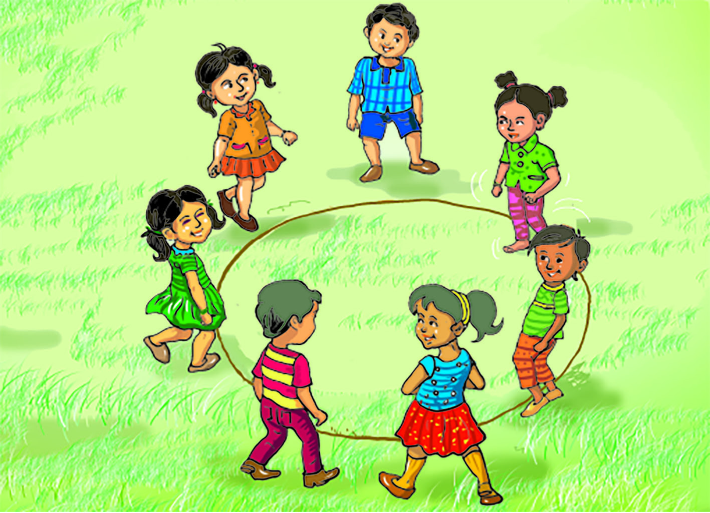
Page 76


180
സാമൂഹ്്യശാസ്ത്രം ക്ാസ് V
• സമയക്രമംംം പാലിക്കുുുക
• സ്കൂൂൂൾ യൂൂണിഫോംം ധരിക്കുുുക
ഇവ പാലിക്കപ്്പെടാതിരുുന്ാൽ എ്തായിരിക്്കുുംം സംംഭവിക്കുുക?
സ്കൂളിൽ പാലിക്കേണ്ട്ട വ്്യവസ്ഥകളുംം മാർഗനിർദേശങ്ങളുംം സംംഘമായി
ചാർട്ിൽ എഴുുതി ക്ാസിൽ പ്രദർശിപ്പിക്കുുക.
സാമൂഹികവഴക്കങ്ങൾ
(Social Norms)
ഒരുു പ്രത്യേേക സാമൂഹിക
സംംഘത്തിിലോോ സംംസ്കാാര
ത്തിലോോ സ്വവീകാര്്യമായി കണക്കാ
ക്കപ്പെടുന്ന വിശ്്വാസങ്ങൾ, മനോ�ോ
ഭാവങ്ങൾ, പെരുമാറ്റങ്ങൾ എന്നിവ
യുടെ അലിഖിത നിയമങ്ങളാണ് സാമൂ
ഹികവഴക്കങ്ങൾ.
•
•
എന്ാണ് നിയമം?
സ്കൂളിൽ വ്്യവസ്ഥകളുംം മാർഗനിർദേശങ്ങളുംം അനുുസരിക്കുന്നതുപോ�ോലെ സമൂൂഹത്തിന്്റെ
നിലനില്ിന്് ചില വ്്യവസ്ഥകളുംം മാർഗനിർദേശങ്ങളുംം പാലിക്കേണ്ട്ടത്് അനിവാര്യമാണ്്.
മനുുഷ്്യർ സാമൂൂഹികജീവികളാണ്്. ഓരോ�ോ വ്്യക്ിക്്കുുംം സമൂൂഹത്ിൽ മെച്ചപ്്പെട്ട
ജീവിതവുംം സംംരക്ഷണവുംം ഉറപ്പുവരുുത്തുന്നതിന്് നിയമങ്ങൾ അനിവാര്യമാണ്്.
സമൂൂഹത്തിലെ എല്ലാവരുടെയുംം ക്ഷേമത്ിന്് വേണ്ടി്ടിയുുളളതാണ്് നിയമങ്ങൾ.
ഒരുു സാമൂൂഹികക്കൂട്ായ്്മയിൽ അതിലെ അംംഗങ്ങളായ വ്്യക്ികളുടെ സ്വഭാവംം,
പെരുുമാറ്റംം, പ്രവൃത്ി, സ്വാതന്തത്ര്്യംം, അവകാശംം തുടങ്ങിങ്ങിയവയ്ക്കുമേൽ ചില വ്്യവസ്ഥകളുംം
നിയന്ത്രണങ്ങളുംം ആവശ്്യമാണ്്. വ്്യക്ിതാല്പര്യങ്ങൾ സംംരക്ഷിക്കപ്്പെടുന്നതോ�ോടൊ�ൊപ്പംം
പൊ�ൊതുുതാല്പര്യങ്ങൾകൂടി പരിഗണിക്കപ്്പെടേണ്ട്ടതുണ്ട്്. ഇത്തരംം സന്ദർഭങ്ങളിൽ
സമൂൂഹത്ിന്് ചില ചിട്ടകൾ ആവശ്്യമായിവരുുന്നുു. ഈ ധർമ്മമാണ്് നിയമങ്ങൾ
നിർവഹിക്കുന്നത്്.
നിയമങ്ങൾ പാലിക്കപ്്പെടാതിരുുന്ാൽ സമൂൂഹത്ിൽ എ്താണ്് സംംഭവിക്കുുക?
നിയമങ്ങൾ പാലിക്കപ്്പെടാതിരുുന്ാൽ സംംഘർഷങ്ങളുണ്ടാ്ടാകുുന്നുു. ഇത്് സമൂൂഹത്തിന്്റെ
നിലനില്പിനെ അപകടത്തിലാക്കുുന്നുു. അതിനാൽ, നിയമലംംഘനംം ശിക്ാർഹമാണ്്.
നിയമങ്ങൾ പ്രധാനമായുംം രണ്ട്് രീതിയിലാണ്് രൂൂപപ്്പെടുന്നത്്.
സമൂഹത്തിന്്റെ നിലനില്പിനും സുഗമമായ പ്രവർത്തനങ്ങൾക്്കുും വേണ്ി
ഏർപ്പെടുത്തുന്ന അംഗീീകരിക്കപ്പെട്ട നിയന്ത്രണങ്ങളും വ്്യവസ്ഥകളുമാണ് നിയമം.
• സാമൂൂഹികവഴക്കങ്ങളിൽക്കൂൂടിി
രൂൂപപ്്പെടുന്ന നിയമങ്ങൾ
• വ്യയവസ്ഥാപിതമായ സംംവിധാന
ങ്ങൾ വഴി രൂൂപപ്്പെടുടുത്തുന്ന
നിയമങ്ങൾ
പ്രാചീനസമൂൂഹത്ിൽ നിലനിന്ിരുന്ന
നിയമങ്ങളെല്്ലാാംം തന്നെ വഴക്കങ്ങളിൽ നിന്ന്
രൂൂപപ്്പെട്ടവയാണ്്.
Page 77


181
നിയമവും സമൂഹവും
ഇവ പൊൊതുവെ കൃത്യമായി എഴുതപ്പെടാത്തവയായിരുന്ു. സാമൂഹിക വഴക്കങ്ങ
ളിൽക്കൂടിയും ആചാരങ്ങളിൽക്കൂടിയുമായിരുന്ു അവ നടപ്പിലാക്കിക്കിയിരുന്നത്.
സാമൂഹികക്രമങ്ങളുടെ ഭാഗമായി ഉണ്ടായിരുന്ന മിക്കനിയമങ്ങളും പിന്നീട് മാറ്റപ്പെടുകയോ�ോ
കാലോ�ോചിതമായി പരിഷ്കരിക്കപ്പെടുകയോ�ോ ചെയ്ിട്ുണ്്.
നിത്യജീീവിതത്തിൽ നമുക്ക് പരിചിതമായ നിയമങ്ങൾ ഏതൊ�ൊക്കെയാണ്?
• ഗതാാഗതനിയമങ്ങൾ
• വിദ്യാ�ാഭ്യാ�ാസ അവകാാശനിയമം
• ബാാലാാവകാാശനിയമം
ഈ നിയമങ്ങൾ രൂപപ്പെട്ടത് എങ്ങനെ
യാണ്?
ആധുനിക കാലഘട്ടത്തിത്തിൽ ഓരോ�ോ
ഗവൺമെൻ്ും നിയമ നിർമ്മാണ
സഭകൾ
വഴിയാണ്
രാഷ്ട്രത്തിനാ
വശ്യമായ
നിയമങ്ങൾ
നിർമ്ി
ക്കപ്പെടുന്നത്.
ഗവൺമെന്റുകൾ മുൻകൈയെ
ടുത്ത്
നിർമ്മിക്കുന്ന നിയമങ്ങൾക്ക് പുറമെ
ശക്തമായ പൊൊതുജനാഭിപ്രായത്തെ
തുടർന്ും നിയമനിർമ്മാണസഭകൾ
നിയമങ്ങൾ നിർമ്മിക്കാറുണ്്.
കോ�ോടതിവിധികളും വ്യയാഖ്്യയാനങ്ങളും നിർദേശങ്ങളും പലപ്്പപോഴും പുതിയ
നിയമങ്ങൾക്ക് കാരണമാകാറുണ്്. ഇപ്രകാരം കോ�ോടതി ഇടപെടലുകളിൽക്കൂടിയും
നിയമങ്ങൾ രൂപപ്പെടാറുണ്്.
നിയമങ്ങൾ എങ്ങനെയെല്്ലാാം രൂപപ്പെടുന്ു എന്ന് മനസ്ിലാാക്ിയല്്ലലോ.
വിവിധ രീതികളിൽ രൂപപ്പെട്ട നിയമങ്ങൾക്ക്് ഉദാാഹരണങ്ങൾ കണ്ടെത്ി
പട്ടികപ്പെടുത്ുക.
രാാാഷ്ട്രംംം
ഒരു നിശ്ചിിത ഭൂൂപ്രദേ�ശത്ത്്്
ഭരണകൂടത്തിൻ്റെź കീഴിിൽ
ജീീവിക്കുന്ന സംംംഘടിതമാാായ
സമൂൂഹത്തെ�യാാണ്്് രാാാഷ്ട്രംംം എന്നതു
കൊ�ൊണ്ട്്്
അർഥമാാക്കുന്നത്്്. ജന
സംംംഖ്യയ, ഭൂൂപ്രദേ�ശംംം, ഗവൺമെെന്റ്്്, പരമാാധിി
കാാരംം എന്ിവയാാണ്് രാഷ്ട്രത്തിന്റെ
ഘടകങ്ങൾ.
ഇന്തയൻ പാാർലമെന്റ്്
കേരള നിയമനിർമ്മാാണ സഭ
Page 78
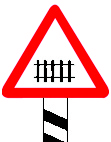
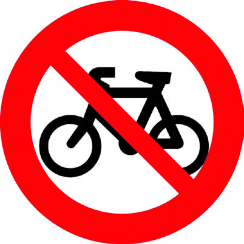
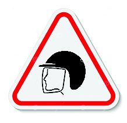
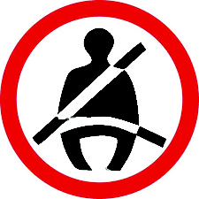
182
സാമൂഹ്്യശാസ്ത്രം ക്ാസ് V
റോ�ോഡ്് സുുരക്ഷയുുമായി ബന്ധപ്്പെട്ട ചിത്രങ്ങൾ ഓരോ�ോന്്നുുംം എന്തിനെ സൂൂചിപ്പിക്കുുന്നുു
എന്ന് കണ്ടെത്ി എഴുുതുുക.
(1) സൈക്ിൾ സവാരി പാടില്ല
(2) ....................
(3) ....................
(4) ....................
(5) ....................
(6) ....................
(7) സീറ്്റ്ബബെൽറ്റ്് ധരിക്കുുക
(8) ....................
(9) ....................
ഇത്തരംം അടയാളങ്ങൾ സൂൂചിപ്പിക്കുന്ന നിയമങ്ങൾ ദൈനംദിന ജീവിത
ത്ിൽ പാലിക്കേണ്ട്ടത്് അനിവാര്യമാണ്്. റോ�ോഡ്് ഗതാഗതംം സുുഗമവുംം അപകട
രഹിതവുുമാക്കുന്നതിനുവേണ്ടി്ടി ആവിഷ്കരിച്ിട്ടുള്ള നിയമങ്ങളാണ്് റോ�ോഡ്്
സുുരക്ാനിയമങ്ങൾ. കാൽനടയാത്രക്ാരുംം വാഹനങ്ങൾ ഓടിക്കുന്നവരുംം ഈ
നിൽക്കൂ... നോ�ോക്കൂ
ക്കൂ... നീങ്ങൂീങ്ങൂ...
(1)
(4)
(7)
(2)
(5)
(8)
(3)
(6)
(9)
Page 79
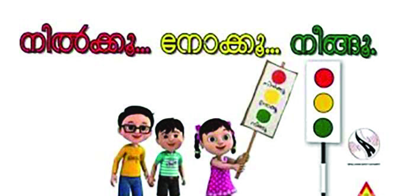

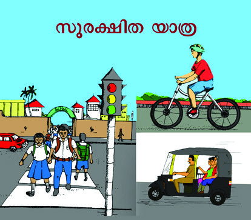

183
നിയമവും സമൂഹവും
റോോഡ് സുരക്ഷാനിയമങ്ങളെക്കുറിച്് അവബോോധമുണ്ടാക്കാനായി
പ്ലക്കാർഡുകൾ, മുദ്ാഗീതങ്ങൾ എന്നിവ തയ്യാറാക്കി റോോഡ് സുരക്ാ
ദിനത്തിൽ റാലി സംഘടിപ്പിക്കുക.
കാൽനടയാത്രക്കാരുടെ
ശ്രദ്ധയ്ക്ക്
• നമ്മുുടെെ രാജ്യയത്ത്്് വാഹനഗതാഗതംംം റോ�ോഡിന്റെ� ഇടതുുവശത്തുുകൂൂടിയാണ്്്.
റോ�ോഡിന്്റെ വലതുവശംം ചേർന്നുുനടന്ാൽ, എതിരെ വരുന്ന വാഹനങ്ങൾ
വ്്യക്തമായി കാണാൻ സാധിക്്കുുംം. ഇടതുവശത്തുുകൂടിയാണ്് നടക്കുന്നതെങ്ിൽ
പിന്നിലൂടെ വരുന്ന വാഹനങ്ങൾ നാംം കാണില്ല. ഇത്് അപകട സാധ്യത
വർധിപ്പിക്കുുന്നുു.
• റോ�ോഡിൻ്റെ� വശത്ത്്് നടപ്പാത ഉണ്ടെ�ങ്കിൽ അതിലൂൂടെെ നടക്കുുുക.
നടപ്പാതകളില്ലായെങ്ിൽ റോ�ോഡിന്്റെ വലതുവശംം ചേർന്നുുമാത്രം നടക്കുുക.
• രണ്ടുുപേ�രിൽ കൂൂടുുുതൽ വശംംം
ചേ�ർന്നുുു നടക്കരുുത്്്.
• കാൽനടയാത്ര
നിരോ�ോധിച്ചിട്ടുുള്ള
സ്ഥലങ്ങളിലൂടെ കാൽനടയാത്ര പാടില്ല.
• മൊ�ൊബൈൈൽ ഫോോൺ, ഹെ�ഡ്്സെ�റ്റ്്്
എന്നിവ
ഉപയോ�ോഗിച്ചുകൊ�ൊണ്ട്്
റോ�ോഡിൽകൂടി നടക്കരുുത്്.
• ആദ്യം�ംം വലതുുവശത്തേ�ക്കുംം� പിന്നീട്്്
ഇടതുു
വശത്തേക്്കുുംം
നോ�ോക്ി
വാഹനങ്ങൾ ഇല്ലെന്ന് ഉറപ്പുവരുുത്ി
മാത്രം റോ�ോഡ്് മുുറിച്ചുുകടക്കുുക.
സീബ്രാക്്രരോസിംംഗുുള്ള സ്ഥലങ്ങളിൽ
അതിലൂടെ മാത്രം റോ�ോഡ്് മുുറിച്ചുുകടക്കുുക.
• സിഗ്നലുുുള്ള ഇടങ്ങളിൽ കാൽനട
യാത്രക്ാർക്ക്് കടന്നുപോ�ോകാനുുള്ള
നിയമങ്ങൾ പാലിക്ാൻ ബാധ്യസ്ഥരാണ്്. ഗതാഗതനിയമങ്ങൾ അനുുസരിക്കുന്നതിലൂടെ
സ്വന്തംം സുുരക്ഷയുംം മറ്റുുള്ളവരുടെ സുുരക്ഷയുംം ഉറപ്പുവരുുത്ാൻ കഴിയുുന്നുു.
Page 80


184
സാമൂഹ്്യശാസ്ത്രം ക്ാസ് V
പച്ചവെ
ളിച്ചംം
തെ
ളിയുന്നതുവരെ
കാത്തുുനിൽക്കുുക.
• കാൽനടയാത്രക്കാർക്കായി
നിർമ്മി
ക്കപ്്പെട്ിരിക്കുന്ന മേല്പാലങ്ങൾ (Foot Over
Bridge), സ്കൈവാക്ക്്, ഭൂൂഗർഭപാതകൾ
എന്നിവ ഉണ്ടെങ്ിൽ അവ ഉപയോ�ോഗിക്കുുക.
നിയമവും സൈബർ ലോോകവും
സൈബർ തട്ടിപ്പ്;
വിദേശപ
ൗരൻ
അറസ്റിൽ
വീീഡിയോ�ോ
കോ�ോ
ളിലും
വ്്യയാജൻ:
സുുഹൃത്തിിന്റെ� മുുഖംം
കാണിച്ച്
പണംം തട്ടി
ഓൺലൈൻ
ഇടപാട്
നടത്തുന്നവർക്ക്
ലക്കിക്കികൂപ്പൺ അയച്്
തട്ടിപ്പ്; ജാഗ്രത
പാലിക്കുക
വ്്യയാജ സാമൂഹിക
മാധ്്യമ പ്്രരൊഫൈൽ
ഉപയോ�ോ
ഗിച്്
സാമ്പത്തിക തട്ടിപ്പ്
കാൽനടയാത്രക്ാർക്കുുളള സുുരക്ാ നിർദേശങ്ങൾ വിവിധ ഗ്രൂപ്പുുകളായി
റോ�ോൾപ്ലേയിലൂടെ അവതരിപ്പിക്കൂ.
വാർത്ാതലക്കെട്ടുകൾ വായിച്ചില്ലേ.
നവമാധ്യമങ്ങളിലൂടെ എത്രയെത്ര തട്ി
പ്പുുകളാണല്ലേ. ഇവ നിയന്തിക്ാൻ
നിയമങ്ങളുണ്്ടടോ?
ഇന്റർനെറ്റ്് ഗെയിമുുകൾ, മൊ�ൊബൈൽ
ആപ്പുുകൾ, ഓൺലൈൻ സേവനങ്ങൾ
എന്നിവയിൽ ധാരാളംം തട്ടിപ്പുുകൾ
നടക്കുുന്നുണ്ട്്. ഇത്തരംം സാഹചര്യങ്ങ
ളിൽ നിന്ന് സംംരക്ഷണംം ലഭിക്കുന്ന
വിവരസാങ്കേതികവിദ്്യയാ
നിയമം 2000
വിവരസാ
ാങ്കേ�തിികവിദ്യയ ഉപയോ�ോഗിി
ച്ചുുള്ള ഇടപാടുുകൾക്ക് നിിയമപരമാായ
അംംഗീീകാരവുംംc സുുരക്ഷിതത്വവവുംംc ഉറപ്പുു
വരുുത്തുുന്നതിനായി നിിലവിിൽ വന്ന നിിയമ
മാണിത്.
സൈൈബർ
കുുറ്റകൃത്യയങ്ങളിൽ
ഏർപ്പെ�ടുുന്നവർക്ക് കർശനമാായ ശിക്ഷയാണ്
ഈ നിിയമത്തിിൽ വ്യയവസ്ഥ ചെxയ്തിിരിക്കുുന്നത്.
Page 81

185
നിയമവും സമൂഹവും
നിയമങ്ങൾ
ഉദ്ദേശ്്യങ്ങൾ
• വിിവരാാവകാാശ
നിയമം (2005)
• പൊൊതുുജനങ്ങൾക്ക്് വിിവരങ്ങൾ
അറിയാനുള്ള അവകാശം ഉറപ്പുവരുത്ുന്ു.
•
•
•
•
നിങ്ങൾക്ക്് പരിചിതമായ നിയമങ്ങൾ കണ്ടെത്ി പട്ിക പൂൂർത്ിയാക്കൂ.
തിനുവേണ്ടി്ടി ആവിഷ്്ക്്കരിച്ച നിയമമാണ്് 'വിവരസാങ്കേതികവിദ്്യാ നിയമംം 2000'.
ഇതുപോ�ോലെ ജനങ്ങളുടെ സംംരക്ഷണത്ിനുവേണ്ടി്ടി പലവിധത്തിലുുളള നിയമങ്ങൾ
നിലവിലുണ്ട്്.
ബാലവേല
നിരോ�ോ
ധന നിയമം
ലംഘിച്്ചുഃ ഹോ�ോ
ട്ടൽ ഉടമയ്ക്കെതിരെ
കേസെ
ടുത്തു
വിദ്്യയാഭ്്യയാസ അവകാശ നിയമം
പ്രാബല്്യത്തിൽ
ശൈശവവ
ിവാഹ നിരോ�ോ
ധന
നിയമം നിലവിൽ വന്നു
ബാലനീതി നിയമം നിലവിൽ
വന്നതോോടെ കുട്ടിട്ടികൾക്കെ
തിരെയുളള കുറ്റകൃത്്യങ്ങൾ
കുറഞ്്ഞുഃ സർവേ റിപ്്പപോർട്ട്
ഗതാഗതനിയമങ്ങൾ, സൈബർനിയമങ്ങൾ തുടങ്ങിങ്ങിയവ സമൂൂഹത്തിന്്റെ പൊ�ൊതുവായ
സുുരക്ഷ മുുൻനിർത്ിയുുള്ളതാണ്്. എന്ാൽ ചില നിയമങ്ങൾ പ്രത്്യയേക വിഭാഗങ്ങളുടെ
സംംരക്ഷണാർഥംം ഉള്ളവയാണ്്.
കുട്ടിട്ടികളും അവകാശങ്ങളും
ബാലവേല
നിരോ�ോ
ധന നിയമം 1986
14 വയസ്സിന് താഴെയുളള കുട്ടിട്ടികളെ ജോ�ോല
ിക്ക് നിയമിക്കുന്നത് കുറ്റകരമാണ്.
വാർത്ാതലക്കെട്ടുകളുടെ കൊ�ൊളാഷ് ശ്രദ്ിക്കൂ. ഏതെല്്ലാാംം നിയമങ്ങളാണ്് ഇതിൽ
സൂൂചിപ്പിക്കുന്നത്്?
• ബാലവേ�ല
നിിരോ�ോ
ധന നിിയമംം
•
സുുരക്ിതമായ ബാല്യയംം ഓരോ�ോ കുുട്ിയുടെയുംം അവകാശമാണ്്. സുുരക്ഷ മുുൻനിർത്ി
ഇന്തത്യത്യൻ ഭരണഘടന കുുട്ികൾക്ക്് ചില അവകാശങ്ങൾ ഉറപ്പുുനൽകുുന്നുണ്ട്്.
ഇതുുകൂടാതെ ബാലാവകാശങ്ങൾ സംംരക്ിക്കുന്നതിനായി നിരവധി നിയമങ്ങളുംം
സംവിധാനങ്ങളുംം നിലവിലുണ്ട്്.
Page 82
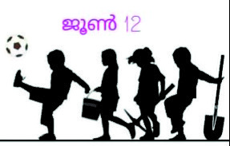

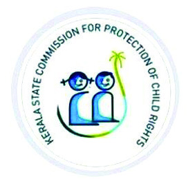

186
സാമൂഹ്്യശാസ്ത്രം ക്ാസ് V
വിദ്്യയാഭ്്യയാസ അവകാാശ നിയമം 2009
6 മുതൽ 14 വയസ്സ് വരെയുളള കുട്ികൾക്ക്് സൗജന്യവും നിർബന്ിതവുമാായ
പ്രാാഥമികവിദ്്യയാഭ്്യയാസം ഉറപ്ുനൽകുന്ു.
ബാാലാാവകാാശ സംരക്ഷണ കമ്മീഷൻ
കുട്ികളുടെ അവകാാശങ്ങൾ സംരക്ഷിക്ഷിക്കാാൻ വേണ്ി ദേശീീയതലത്ിൽ ദേശീീയ
ബാാലാാവകാാശ സംരക്ഷണ കമ്മീഷനും സംസ്ഥാാനതലത്ിൽ സംസ്ഥാാന ബാാലാാവകാാശ
സംരക്ഷണ കമ്മീഷനും പ്രവർത്ിക്ുന്ുണ്ട്്.
നവംബർ 20 ലോ�ോകബാാലാാവകാാശ
സംരക്ഷണദിനം
ജൂൺ 12 ബാാലവേലവിരുദ്ധ ദിനം
ചൈൽഡ്് ഹെൽപ്് ലൈൻ നമ്പർ : 1098
സുരക്ഷിതബാാല്യം�ം ഉറപ്പുവരുത്തുന്നതിനാായി 2015-ൽ നിലവിൽ
വന്ന നിയമമാാണ്്് ബാാാലനീീതി നിയമം. കുട്ടികളെ� ഉപദ്രവിക്കുക,
അവഗണിക്കുക, ഭിക്ഷാാട
നത്തിനുപയോ�ോഗിക്കുക, അടിമവേ�ല
ചെ�യ്യിിക്കുക, ലഹരി വസ്തുുക്കൾ നൽകുക, അതിന്റെź വില്പനക്കാായി കുട്ടികളെ�
ഉപയോ�ോഗിക്കുക തുടങ്ങിയവ ഈ നിയമമനുസരിച്ച്്് ശിക്ഷാാാർഹമാാണ്്്.
ഇത്തരം അവകാാാശലംഘനങ്ങൾ ഉണ്ടാായാാാൽ സംസ്ഥാാാന ബാാലാാാവകാാാശ
സംരക്ഷണ കമ്മീീഷനെ� സമീീപിക്കാാവുന്നതാാണ്്്.
കുട്ടികളുടെ അവകാശങ്ങളെ സംബന്ധിിച്ച് ‘ബാലസഭ’യിിൽ
അവതരിിപ്പിിക്ുന്നതിിനായിി പ്രസംഗം തയ്ാറാക്ുക.
ബാാലനീീതി നിയമം 2015
Page 83


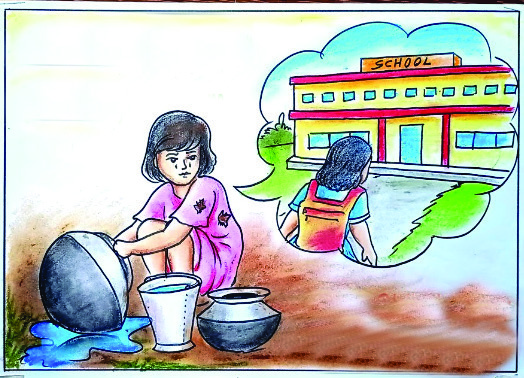

187
നിയമവും സമൂഹവും
ലിംംcഗപദവിി വ്യത്യാാസംം ഇല്ലാാതെ� കുുട്ടിികൾക്കെെÚതിിരെെെ
യുുള്ള ലൈം�ംഗിിക അതിിക്രമങ്ങളിിൽ നിിന്ന്് അവരെെെ
സംംരക്ഷിിക്കുന്നതിിനാായിി
നിിലവിിൽ വന്ന നിിയമമാാണ്്
പോ�ോക്്സോ�ോ ആക്ട്് (ലൈം�ംഗിിക കുുറ്റകൃത്യയങ്ങളിിൽ നിിന്നുംംc കുുട്ടിികളെ�
സംംരക്ഷിിക്കുന്നതിിനു
ുള്ള നിിയമംം) 2012. അന്താാരാാഷ്ട്രതലത്തിിൽ
1989-ൽ നിിലവിിൽ വന്ന കുുട്ടിികളുുടെെ അവകാാശ ഉടമ്പടിിയെ�
അംംഗീകരിിച്ചുുകൊ�ൊണ്ടാാണ്് ഇന്ത്യാാഗവൺമെെന്റ്് ഈ നിിയമംം
നടപ്പിിലാാക്കിിയിിട്ടുള്ളത്്.
കുട്ടികള
ുടെ അവകാ
ശസംരക്ഷണ
സന്ദേശം പ്രചരിപ്പിക്കുന്ന
പോ�ോസ്റ്ററുകൾ തയ്യാറാക്കുക.
കുട്ടികള
ുടെ
അവകാ
ശങ്ങൾ
വിദ്്യയാഭ്്യയാസ
അവകാ
ശ
നിയ
മം
നിയ
മവാഴ്ച
വ്്യത്്യസ്തങ്ങളായ നിയമങ്ങൾ നമ്മൾ പരിചയപ്പെട്ടല്്ലലോ. ഈ നിയമങ്ങൾക്ക് വിധേയ
പ്പെടുന്നതുകൊsൊണ്ാണ്് നമ്മുടെ
സാമൂഹികജീവിതം സുഗമമായി മുന്്നനോട്ടുപോ�ോകുന്നത്.
നിയമത്ിനു മുന്നിൽ എ്ലാ പൗരരും തുല്്യരാണ്്. നിയമം ഉറപ്പാക്ുന്ന തുല്്യ
സംരക്ഷണം അനുഭവിച്ച്് അവയ്കക് വിധേയപ്പെട്ട്് ജീവിക്ുന്ന സാഹചര്യമാണ്്
നിയമവാഴ്്ച.
തർക്കപരിഹാര സംവി
ധാനങ്ങൾ
നിങ്ങളുടെ വിദ്്യയാലയത്ിൽ എന്്തെങ്കിലും തരത്തിലുള്ള നിയമലംഘനം ഉണ്ായാൽ
പരിഹാരത്ിനായി ആരെയൊ�ൊക്കെയാണ്് സമീപിക്കുക?
•
•
സമൂഹത്തിൽ തർക്കങ്ങളും�ം കലഹങ്ങളും�ം ഉണ്ടാകുമ്പോƠോൾ നിയമവാഴ്്്ച ഉറപ്പു
വരുുത്താനുംം� അവയ്ക്ക്്് പരിഹാരം കാണാനുംം� ഏതെ�ല്ലാംDZ സംവിധാനങ്ങളെ�യാണ്്് നാംം
സമീപിക്കുന്നത്്്?
• തദ്ദേŔശസ്വയംഭരണസ്ഥാാപന ജാഗ്രതാസമിതികൾ
•
•
പോ�ോക്�്സസോോ ആക്ട് 2012
(Protection of Children from Sexual Offences Act 2012)
Page 84
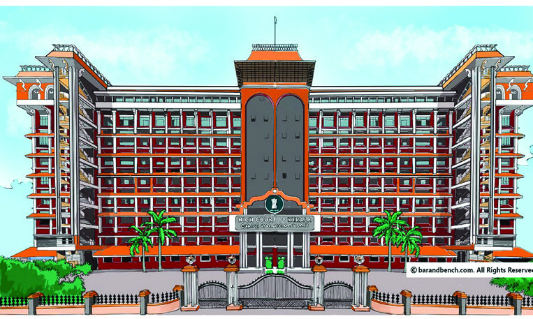


188
സാമൂഹ്്യശാസ്ത്രം ക്ാസ് V
കുട്ടികളെ
സംബന്ധിക്കുന്ന നിയ
മങ്ങളെക്കുറിച്ച് നിയ
മവിദഗ്ധരുമായി
അഭിമുഖം നടത്തി വിവര
ങ്ങൾ ശേഖരിച്ച് കുറിപ്പ് തയ്യാറാക്കൂ.
ക്രമസമാധാനപാലനമാണ്് പോ�ോലീസിന്്റെ ചുമതല. തർക്കങ്ങൾ പരിഹരിക്ുന്നതിനും
ശിക്ഷ വിധിക്ുന്നതിനുമുള്ള അധികാരം കോsോടതികൾക്ാണ്്.
കോsോടതികളെക്ുറിച്ച്് നൽകിയിരിക്ുന്ന വിവരങ്ങൾ ശ്രദ്ിക്ൂ.
കേരള
ഹൈക്്കകോടതി
സുപ്്രീീംകോsോടതി
ഇന്തത്യയ
ുടെ പരമോ�ോന്നത കോ�ോടതിയാണ
്
സുപ്്രീീംകോ�ോടതി. ന്്യയൂൂഡൽഹിയിലാണ
്
സുപ്്രീീംകോ�ോടതി സ്ഥിതിചെ
യ്യുന്നത്.
സംസ്ഥാനത്തെ ഏറ്റവും ഉയർന്ന കോ�ോടതി
യാണ
് ഹൈക്്കകോടതി. എറണാക
ുളത്താണ
്
കേരള
ഹൈക്്കകോടതി സ്ഥിതിചെ
യ്യുന്നത്.
സുപ്്രീീംകോsോടതിയും ഹൈക്്കകോടതികളും കൂടാതെ വിവിധതരം കോsോടതികൾ നമ്മുടെ
രാജ്യത്ത്് പ്രവർത്ിക്ുന്നുണ്ട്്. കോsോടതികളുടെ ശ്രേണീഘടന നിരീക്ഷിക്ൂ.
സുപ്്രീീം കോsോടതി
ഹൈക്്കകോടതിക
ൾ
ജില്ലാകോ�ോടതിക
ൾ
കീഴ്ക്കകോടതിക
ൾ
നിയമത്തിന്്റെ പരമാധികാരം ഉറപ്പുവരുത്തുക എന്നതാണ്് കോsോടതികളുടെ മുഖ്്യ
ചുമതല. നിയമങ്ങൾ പാലിക്ുന്നതുകൊsൊണ്ാണ്് നമുക്ക് സാമൂഹികജീവിതം
സാധ്യമാകുന്നത്. ഇത് തിരിച്ചറിഞ്ഞ്് പ്രവർത്തിക്കേണ്ടത്് നാം ഓരോ�ോരുത്തരുടെയും
കടമയാണ്്.
Page 85

189
നിയമവും സമൂഹവും
1. സാമൂഹ്യയശാാസ്ത്ര ക്ലബിിന്റെ� ആഭിമുഖ്യയത്തിൽ റോ�ോഡ്്് സുരക്ഷാവാരം ആചരിക്കുക.
2. ചൈൈൽഡ്്ലൈ
ൻ പ്രവർത്തകരുമായി ക്ലാസ്�തല അഭിമുഖം സംഘടിപ്പിക്കുക.
3. ടീച്ചറുടെെ സഹായത്തോ�ോടുകൂടി ക്ലാസ്�തല നിയമാവലിി നിർമ്മിക്കുക.
4. നിങ്ങളുടെെ സമീപത്തുളള പോ�ോലീീസ്്് സ്റ്റേǢഷൻ സന്ദർശിച്ച്്് അവിടത്തെ�
പ്രവർത്തനങ്ങൾ നിരീക്ഷിച്ച്്് കുറിപ്പ്്് തയ്യാാറാക്കുക.
5. തദ്ദേŔശ സ്വയംഭരണസ്ഥാാപന ജാഗ്രതാസമിതികൾ നിരീക്ഷിച്ച്്് അവിടത്തെ�
തർക്കപരിഹാര സംവിധാനങ്ങളെ സംബന്ിച്ച്് നിരീക്ഷണക്ുറിപ്പ്് തയ്യാറാക്കുക.
6. 'സൈൈബർ ലോ�ോകത്തെ� ചതിക്കുഴികൾ' എന്ന വിഷയത്തെ� സംബന്ധിച്ച്്്
ഒരു സെ
മിനാർ സംഘടിപ്പിക്കുക. വിദഗ്ധരുടെ സേവനംകൂടി
ഉപയോഗപ്പെടുത്തുക.
തുടർപ്രവർത്തനങ്ങൾ
Page 86
.................................................................................................................................................................
.................................................................................................................................................................
.................................................................................................................................................................
.................................................................................................................................................................
.................................................................................................................................................................
.................................................................................................................................................................
.................................................................................................................................................................
.................................................................................................................................................................
.................................................................................................................................................................
.................................................................................................................................................................
.................................................................................................................................................................
.................................................................................................................................................................
.................................................................................................................................................................
.................................................................................................................................................................
.................................................................................................................................................................
.................................................................................................................................................................
.................................................................................................................................................................
.................................................................................................................................................................
.................................................................................................................................................................
.................................................................................................................................................................
.................................................................................................................................................................
.................................................................................................................................................................
.................................................................................................................................................................
.................................................................................................................................................................
കുറിപ്പുകൾ
Page 87
ഭാരതത്തിന്്റെ ഭരണഘടന
ഭാഗംം IV ക
മൗലിക കർത്തവ്്യ
ങ്ങൾ
51 ക. മൗലിക കർത്തവ്്യ
ങ്ങൾ - താഴെപ്പറയുന്നവ ഭാരതത്തിലെ
ഓരോ�ോ
പൗരന്്റെയും
കർത്തവ്്യയം ആയിരിക്കുന്നതാണ് :
(ക) ഭരണഘടനയെ അനുുസരിക്കുുകയുംം അതിന്്റെ ആദർശങ്ങളെയുംം സ്ഥാപനങ്ങ
ളെയുംം ദേശീയപതാകയെയുംം ദേശീയഗാനത്തെയുംം ആദരിക്കുുകയുംം ചെയ്യുുക;
(ഖ) സ്വാതന്ത്്ര്യയത്ിനുവേണ്ടി്ടിയുുള്ള നമ്മുടെ ദേശീയസമരത്ിന്് പ്രചോ�ോദനംം നൽകിയ
മഹനീയാദർശങ്ങളെ പരിപോ�ോഷിപ്പിക്കുുകയുംം പിൻതുടരുുകയുംം ചെയ്യുുക;
(ഗ) ഭാരതത്തിന്്റെ പരമാധികാരവുംം ഐക്യവുംം അഖണ്ഡതയുംം നിലനിർത്തുുകയുംം
സംംരക്ിക്കുുകയുംം ചെയ്യുുക;
(ഘ) രാജ്യത്തെ കാത്തുുസൂൂക്ിക്കുുകയുംം ദേശീയസേവനംം അനുുഷ്ിക്കുവാൻ ആവശ്്യ
പ്്പെടുമ്്പപോൾ അനുുഷ്ിക്കുുകയുംം ചെയ്യുുക;
(ങ) മതപരവുംം ഭാഷാപരവുംം പ്രാദേ
ശികവുംം വിഭാഗീയവുുമായ വൈവിധ്യങ്ങൾക്കതീ
തമായി ഭാരതത്തിലെ എല്ാ ജനങ്ങൾക്കുുമിടയിൽ, സൗഹാർദവുംം
പൊ�ൊതുവായ
സാഹോ�ോദര്യമനോ�ോഭാവവുംം
പുലർത്തുുക, സ്ത്രീകളുടെ അ്തസ്ിന്് കുുറവുു വരുുത്തുന്ന
ആചാരങ്ങൾ പരിത്യജിക്കുുക;
(ച) നമ്മുടെ സമ്മിശ്രസംസ്കാരത്തിന്്റെ സമ്പന്നമായ പാരമ്പര്യത്തെ വിലമതിക്കുുകയുംം
നിലനിറുുത്തുുകയുംം ചെയ്യുുക;
(ഛ) വനങ്ങളുംം തടാകങ്ങളുംം നദികളുംം വന്്യജീവികളുംം ഉൾപ്്പെടുന്ന പ്രകൃത്യാ ഉള്ള
പരിസ്ഥിതി
സംംരക്ിക്കുുകയുംം
അഭിവൃദ്ധിപ്്പെടുടുത്തുുകയുംം,
ജീവികളോ�ോട്്
കാരുണ്്യയംം കാണിക്കുുകയുംം ചെയ്യുുക;
(ജ) ശാസ്ത്രീയമായ കാഴ്്ചപ്പാടുംം മാനവികതയുംം, അന്്വവേഷണത്ിനുംം പരിഷ്കരണ
ത്ിനുംം ഉള്ള മനോ�ോഭാവവുംം
വികസിപ്പിക്കുുക;
(ഝ) പൊ�ൊതുസ്്വത്ത്് പരിരക്ിക്കുുകയുംം ശപഥംം ചെയ്ത്് അക്രമംം ഉപേക്ിക്കുുകയുംം
ചെയ്യുുക;
(ഞ) രാഷ്ട്രംം യത്നത്തിന്്റെയുംം ലക്ഷഷ്യപ്രാ്യപ്രാപ്ിയുടെയുംം ഉന്നതതലങ്ങളിലേക്ക്് നിര്തരംം
ഉയരത്തക്കവണ്ണംം വ്്യക്ിപരവുംം കൂൂട്ായതുുമായ പ്രവർത്തനത്തിന്്റെ എല്ാ
മണ്ഡലങ്ങളിലുംം ഉൽക്കൃഷ്ടതയ്ക്കുവേണ്ടി്ടി അധ്വാനിക്കുുക;
(ട)
ആറിനുംം പതിനാലിനുംം ഇടയ്ക്ക്് പ്രായമുുള്ള തന്്റെ കുുട്ടിക്്കകോ തന്്റെ സംംരക്ഷണ
യിലുുള്ള കുുട്ികൾക്്കകോ, അതതുു സംംഗതി പോ�ോലെ, മാതാപിതാക്കളോ�ോ രക്ാകർ
ത്താവോ�ോ വിദ്്യയാഭ്യാസത്ിനുുള്ള അവസരങ്ങൾ ഏർപ്്പെടുടുത്തുുക.
Page 88

കുട്ടിട്ടികളുടെ അവകാശങ്ങൾ
പ്രിയമുുള്ള കുുട്ികളേ,
നിങ്ങൾക്കുുള്ള അവകാശങ്ങളെന്തെല്ലാമെന്ന് അറിയേണ്ട്ടതില്ലേ? അവകാശങ്ങളെക്കുു
റിച്ചുുള്ള അറിവ് നിങ്ങളുടെ പങ്ാളിത്തംം, സംംരക്ഷണംം, സാമൂൂഹികനീതി എന്നിവ
ഉറപ്പാക്ാൻ പ്രേരണയുംം പ്രചോ�ോദനവുംം നൽകുംം. നിങ്ങളുടെ അവകാശങ്ങൾ
സംംരക്ിക്ാൻ ഇപ്്പപോൾ ഒരുു കമ്മീഷൻ പ്രവർത്ിക്കുുന്നുണ്ട്്. കേരള സംസ്ഥാംസ്ഥാന
ബാലാവകാശസംംരക്ഷണ കമ്മീഷൻ എന്ാണ്് അതിന്്റെ പേര്്. എന്തെല്ാമാണ്്
നിങ്ങൾക്കുുള്ള അവകാശങ്ങൾ എന്നുു നോ�ോക്്കാാംം.
സംംസാരത്ിനുംം ആശയപ്രകടനത്ിനുു
മുുള്ള സ്വാതന്തത്ര്്യംം
ജീവന്്റെയുംം
വ്്യക്തിസ്വാതന്ത്്ര്യയത്തിന്്റെ
യുംം സംംരക്ഷണംം
അതിജീവനത്ിനുംം പൂൂർണ്ണവികാസത്ി
നുുമുുള്ള അവകാശംം
ജാതി-മത-വർഗ-വർണ്ണ ചി്തകൾക്കതീത
മായി ബഹുുമാനിക്കപ്്പെടാനുംം അംംഗീകരി
ക്കപ്്പെടാനുുമുുള്ള അവകാശംം
മാനസികവുംം ശാരീരികവുംം ലൈംംഗി
കവുുമായ പീഡനങ്ങളിൽ നിന്നുുള്ള സംംര
ക്ഷണത്ിനുംം പരിചരണത്ിനുുമുുള്ള
അവകാശംം
പങ്ാളിത്ത്
ിനുുള്ള അവകാശംം
ബാലവേലയിൽനിന്്നുുംം ആപൽക്കര
മായ ജോ�ോലികളിൽനിന്നുുമുുള്ള മോ�ോചനംം
ശൈശവവിവാഹത്ിൽനിന്നുുള്ള
സംംര
ക്ഷണംം
സ്വന്തംം
സംസ്കാരംം
അറിയുന്നതിനുംം
അതനുുസരിച്ച്്
ജീവിക്കുന്നതിനുുമുുള്ള
സ്വാതന്തത്ര്്യംം
അവഗണനകളിൽനിന്നുുള്ള സംംരക്ഷണംം
സൗജന്യവുംം നിർബന്ധിന്ധിതവുുമായ വിദ്്യാ
ഭ്യാസ അവകാശംം
കളിക്ാനുംം പഠിക്ാനുുമുുള്ള അവകാശംം
സ്നേഹവുംം
സുുരക്ഷയുംം
നൽകുന്ന
കുടുംബവുംം
സമൂൂഹവുംം ലഭ്യമാകാനുുള്ള
അവകാശംം
നിങ്ങളുടെ ചില ഉത്തരവ
ാദിത്വങ്ങൾ
സ്കൂൾ, പൊ�ൊതുുസംവിധാനങ്ങൾ എന്നിവ
നശിപ്പിക്കാതെ സംംരക്ിക്കുുക.
സ്കൂളിലുംം പഠനപ്രവർത്തനങ്ങളിലുംം കൃത്യ
നിഷ്ഠ പാലിക്കുുക.
സ്കൂൾ
അധികാരികളെയുംം
അധ്യാപ
കരെയുംം മാതാപിതാക്കളെയുംം സഹപാഠി
കളെയുംം ബഹുുമാനിക്കുുകയുംം അംംഗീകരി
ക്കുുകയുംം ചെയ്യുുക.
ജാതി-മത-വർഗ-വർണ്ണ
ചി്തകൾക്കതീ
തമായി മറ്റുുള്ളവരെ
ബഹുുമാനിക്ാനുംം
അംംഗീകരിക്ാനുംം സന്നദ്ധരാവുുക.
ബന്ധപ്പെടേണ്ട വിലാസം:
കേര
ള സംസ്ഥാന ബാലാവകാശസംരക്ഷണ കമ്മീീഷൻ
ശ്രീ ഗണേഷ്്, റ്ി.സി. 14/2036, വാൻറോ�ോസ്് ജംംങ്ഷ
ൻ,
കേരള യൂൂണിവേഴ്്സിറ്ി പി.ഒ, തിരുവന്തപുുരംം – 34
ഫോോൺ 0471 – 2326603
ഇ- മെയിൽ childrights.cpcr@kerala.gov.in, rte.cpcr@kerala.gov.in
വെബ്സൈ
റ്റ്് : www.kescpcr.kerala.gov.in
ചൈൽഡ്് ഹെ
ൽപ്പ്് ലൈൻ - 1098, ക്്രൈൈംം സ്റ്റോപ്പർ - 1090, നിർഭയ – 1800 425 1400
കേരള പൊ�ൊലീസ്് ഹെ
ൽപ്പ്് ലൈൻ - 0471 – 3243000/44000/45000
online R.T.E Monitoring : www.nireekshana.org.in